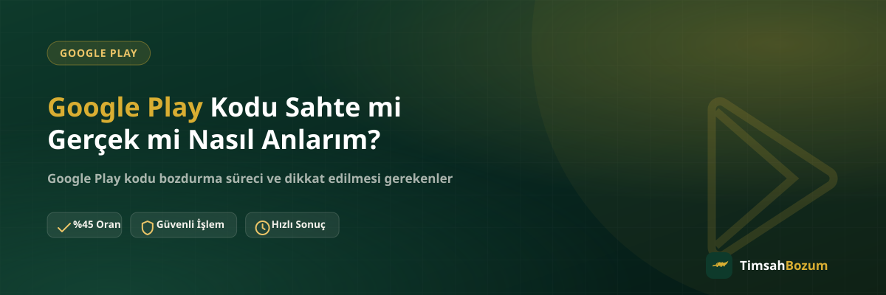

Elindeki bir Google Play kodunu bozdurmadan önce aklına takılan en doğal soru şu olabilir: bu kod gerçek mi, yoksa sahte mi? Özellikle ikinci elden ya da tanımadığın birinden edinilen kodlarda bu endişe daha da büyüyor. Bu yazıda bir Google Play kodunun gerçekliğini anlamak için bakabileceğin işaretleri, sahte kodların en sık ortaya çıktığı durumları ve bozdurmadan önce alman gereken önlemleri anlatıyoruz.
Google Play Kodunun Gerçekliğini Neden Kontrol Etmeliyim?
Google Play kodu, üzerinde belirli bir değeri taşıyan tek kullanımlık bir dizeden ibaret. Kod gerçek ve geçerliyse bu değer bir hesaba yüklendiğinde ya da bozum yoluyla değerlendirildiğinde sorunsuz şekilde tanınır. Ancak piyasada üretilmiş, hiçbir zaman geçerli olmamış ya da rastgele karakterlerden oluşan sahte kodlarla karşılaşmak da mümkün. Kodu bozdurmaya göndermeden önce gerçekliğinden emin olmak, hem senin hem de işlemi yürüten tarafın zaman kaybetmemesi için önemli bir adım.
Sahte Google Play Kodu Neye Benzer?
Sahte bir kod çoğu zaman gerçek bir Google Play kodu gibi görünecek şekilde tasarlanır; karakter sayısı ve formatı benzer olabilir. Aradaki fark, kodun Google'ın sisteminde hiçbir zaman kayıtlı olmamasıdır. Bu yüzden sahte bir kodu sadece görünüşüne bakarak ayırt etmek her zaman mümkün olmayabilir — kesin sonuç, kodun sisteme sorulmasıyla ortaya çıkar.
Kazıma Alanı ve Kod Formatı Neden Önemli?
Fiziksel bir Google Play hediye kartı alıyorsan, kazıma alanının fabrika çıkışında kapalı ve bozulmamış olması önemli bir ilk işaret. Kazıma alanı önceden açılmış, yapıştırılmış ya da üzerinde oynama izi olan bir kart şüpheli kabul edilmeli. Dijital yolla ulaşan kodlarda ise kodun geldiği kaynağın güvenilirliği aynı rolü üstleniyor; resmi bir satış kanalından gelmeyen bir kod formatı doğru görünse bile risk taşıyabilir.
İkinci Elden Alınan Kod Güvenilir mi?
Forum, ilan sitesi veya sosyal medya üzerinden ikinci elden alınan kodlarda sahte kod riski daha yüksek olabilir, çünkü kodun kaynağını doğrulamak zorlaşıyor. Piyasa değerinin belirgin şekilde altında satılan teklifler de dikkatli yaklaşman gereken bir işaret. Bununla birlikte ikinci elden alınan her kodun sahte olduğu anlamına gelmiyor; önemli olan satıcının güvenilirliğini ve kodun kaynağını mümkün olduğunca netleştirmek.
Sahte Kod ile Kullanılmış Kod Arasındaki Fark Nedir?
Bu iki durum sık karıştırılıyor ama aralarında önemli bir fark var. Sahte kod, hiçbir zaman gerçek ve geçerli olmamış bir koddur — sistemde hiç kayıtlı değildir. Kullanılmış kod ise gerçek bir koddur, ancak daha önce bir hesaba yüklenmiş ya da başka biri tarafından bozdurulmuştur; bu yüzden değeri artık tükenmiştir. Kullanılmış kodlarla ilgili detayları Google Play kodu kullanılmışsa ne olur yazımızda ele alıyoruz. Sonuç olarak ikisi de bozum için ödeme yapılmasına engel, ama nedenleri birbirinden farklı.
Google Play Kodunu Bozdurmadan Önce Hangi Kontrolleri Yapmalıyım?
Kodu paylaşmadan önce yapabileceğin birkaç pratik kontrol var: kartın kazıma alanının bozulmamış olduğundan emin ol, kodu güvenilir ve tanıdığın bir kaynaktan aldığından emin ol, kodu kendi hesabına hiç yüklemediğinden emin ol. Bu kontrolleri yaptıktan sonra da emin olamadığın bir durum varsa, kodu WhatsApp üzerinden paylaşarak gerçekliğini teyit ettirebilirsin — bu, kodu bir hesaba yüklemeden yapabileceğin en güvenli yöntemlerden biri.
Sahte Kod Gönderirsem Ne Olur, Bir Yaptırımla Karşılaşır mıyım?
Hayır. Kod kontrol edilir ve geçersiz ya da sahte çıkarsa işlem o noktada duruyor, sana durum bildiriliyor. Bilerek ya da bilmeyerek sahte bir kod paylaşman herhangi bir olumsuz sonuç doğurmaz; sadece o kod için ödeme yapılamayacağı anlamına gelir. Elinde başka bir geçerli kod varsa süreç onunla devam edebilir.
Google Play Kodunu Nereden Aldığın Neden Önemli?
Sahte kodla karşılaşma riskini en çok azaltan şey, kodu edindiğin kaynak. Resmi mağazalardan, yetkili satış noktalarından veya Google'ın kendi kanallarından alınan kodlarda sahte kod ihtimali neredeyse yok denecek kadar azdır. Bunun dışındaki kaynaklarda — özellikle çok ucuz fiyatlı veya aracısız teklif eden kişilerden alınan kodlarda — dikkatli olmak gerekir. Google Play hediye kartlarının nereden satın alınabileceğini bu konudaki yazımızda daha ayrıntılı bulabilirsin.
Kod tabanlı bir hizmet olduğu için Google Play'de kısmi bozum imkanı yok; kodun tam değeri üzerinden işlem yapılıyor. Bu nedenle kodun gerçek ve geçerli olduğundan emin olmak, hem senin hem de sürecin sorunsuz ilerlemesi açısından büyük önem taşıyor. Güncel oranı ve süreci Google Play kod bozdurma sayfamızdan inceleyebilirsin.
Sahte Kodlardan Korunmak İçin Genel Öneriler
Elinde tuttuğun kodu bozdurmadan önce şu birkaç noktaya dikkat etmek işini büyük ölçüde kolaylaştırır: kodu satın aldığın yerin fatura ya da sipariş kaydını sakla, kartı açtığın anı ve kimden aldığını hatırla, kodu hiçbir hesaba yüklemeden önce bozdurmayı değerlendir. Ayrıca unutma ki TimsahBozum'da yalnızca 500 TL ve 1.000 TL değerindeki Google Play kodları işleme alınıyor; bu tutarların dışındaki kodlar kabul edilmiyor, bu yüzden kod satın alırken de bu tutarlara dikkat etmek işlemi kolaylaştırıyor. Süreç boyunca üyelik, form veya kimlik belgesi istenmiyor; hesabına erişim de talep edilmiyor. Eğer WhatsApp dışında bir kanaldan senden SMS doğrulama kodu isteyen biri olursa, bunun dolandırıcılık girişimi olabileceğini unutma.
İlgili Yazılar
- Google Play Kodu Kullanılmışsa Ne Olur?
- Google Play Hediye Kartı Kodu Nereden Alınır?
- Google Play Kodu Bölgeye Özel mi? Ülke Kilidi Nasıl Çalışır?
Elindeki Google Play kodunun gerçek ve kullanılmamış olduğundan eminsen, Google Play kod bozdurma sayfamızdan güncel oranı görebilir, ardından WhatsApp hattımıza yazarak işlemini başlatabilirsin. Kodun gerçekliğinden emin olamadığın durumlarda, hesabına yüklemeden önce WhatsApp'tan sormaktan çekinme.